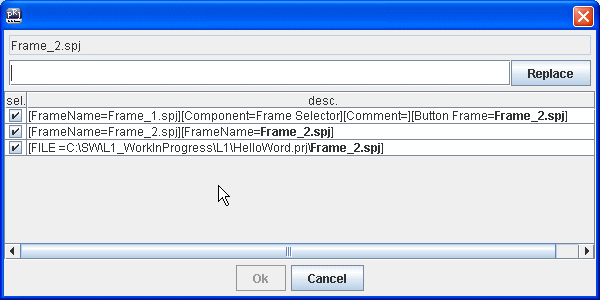
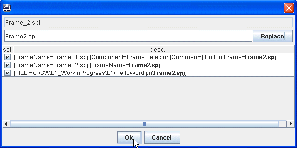
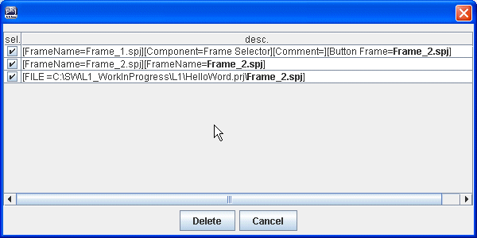

Elimina, Rinomina Frame
Cliccare con il tasto destro sul frame o sulla sequenza nel pannello frames/sequenze.

Elimina, Rinomina FrameCliccare con il tasto destro sul frame o sulla sequenza nel pannello frames/sequenze.
|
Appare un menù che consente di eliminare o rinominare il frame. In ogni caso si apre una finestra che mostra dove si trova il file da rinominare.  Tutti i punti in cui si trova, vengono segnalati. |
Scrivere il nuovo nome del frame, ad esempio Frame2.spj e premere Sostituisci:  Tutti i punti evidenziati in grassetto saranno aggiornati con il nuovo nome e il polsante di conferma sarà abilitato. Il rinominare un frame comporta la modifica di tutti i punti in cui questo vien usato. Questa operazione non è annullabile mediante i tasti annulla/ripristina, ma è comunque possibile rinominare ulteriormente il frame per riportarlo al precedente nome. Solo quando si preme sul pulsante Conferma verranno apportate effettivamente le modifiche. Viceversa se si preme sul pulsante Annulla, nessuna modifica verra apportata. |
Nel caso di eliminazione del frame, la finestra di conferma si presenta così:  |
Nel caso si esce dalla finestra con il tasto Annulla, nessuna modifica verrà apportata. Le effettive modifiche vengono fatte solo alla pressione del tasto Elimina. |